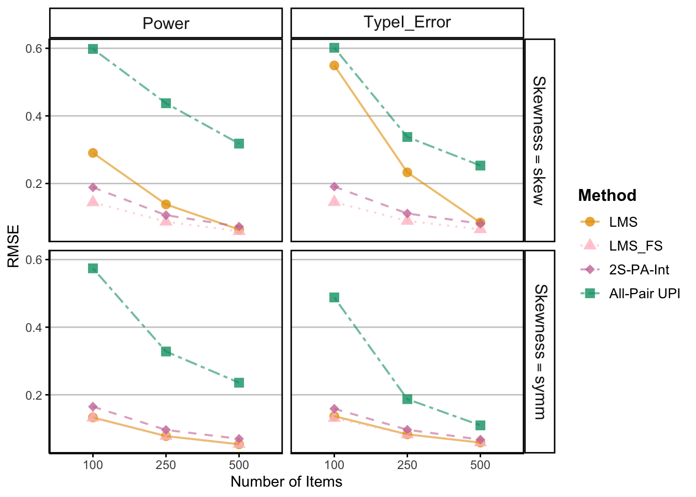

# Raw Data
rdf_dir <- here("Sim_Data", "categorical_03252025_raw")
rdf_path <- list.files(path = rdf_dir, pattern = "results-row-.*\\.rds", full.names = TRUE)
rdf_list <- lapply(rdf_path, function(file) {
data <- readRDS(file)
data[["results"]]
})
rdf_con_list <- do.call(rbind, lapply(rdf_path, function(file) {
data <- readRDS(file)
data[["condition"]]
}))2SPA Interaction with Categorical Indicators
Examine Distribution of Raw Data
Condition 1: \(\beta = 0\), \(\textit{N}\) = 100, \(\rho = 0.8\), Symmetric
Density Plot of SE

Boxplot of SE

Outlier
Method Outlier_Percentage
upi.xm_se_std upi.xm_se_std 11.10
tspa.xm_se_std tspa.xm_se_std 5.05
lms.xm_se_std lms.xm_se_std 3.40
lmsfs.xm_se_std lmsfs.xm_se_std 3.90Confidence Intervals


Examine Summarized Data
Process Plot Data
data_path <- here("Sim_Data", "categorical_03252025.rds")
df <- readRDS(data_path)
# Combined Data
df <- df %>%
dplyr::mutate(plot_type = case_when(
gamma_xm == 0 ~ "TypeI_Error",
gamma_xm == 0.3 ~ "Power"
))
df_pd <- process_data(df)
write_csv(df_pd, here("Sim_Data", "combined_03252025.csv"))
# Split Data
type1_pd <- df_pd %>% filter(plot_type == "TypeI_Error")
power_pd <- df_pd %>% filter(plot_type == "Power")
# Write the processed data
write_csv(type1_pd, here("Sim_Data", "type1_03252025.csv"))
write_csv(power_pd, here("Sim_Data", "power_03252025.csv"))
# Read the saved data if needed
type1_df <- read_csv(here("Sim_Data", "type1_03252025.csv"))
power_df <- read_csv(here("Sim_Data", "power_03252025.csv"))Raw Bias

Standardized Bias

Raw Relative SE Bias

Robust Relative SE Bias

Coverage Rate

RMSE

Type I Error

Power Plot